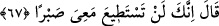
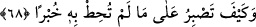

etmiş, onun emir ve yasaklarına boyun eğerek onun irâdesine teslim olmuştur.
67. Dedi ki: Doğrusu sen benimle beraberliğe sabredemezsin.
Hızır (a.s.), Mûsâ (a.s.)’a “Dedi ki: Doğrusu sen benimle beraberliğe
sabredemezsin.” Yâni, Hızır (a.s.) Mûsâ (a.s.)’a sanki bu doğru ve düzgün
şeylerdenmiş gibi te’kidli bir ifâde ile yanında sabredemeyeceğini söyledi. Burada
kastedilen “nasıl sabredersin” sözünün delâlet ettiği gibi sabredemeyeceğidir. Bu da
sabrın gerçekleşemeyeceğini gösterir. Yine burada yapabilme gücünün (istitâat) fiil ile
beraber olduğuna delil vardır.
Mûsâ (a.s.): “Niçin sabretmeye gücüm yetmesin?” diye sordu. Hızır (a.s.): “Çünkü
sen bir peygambersin ve zâhire göre hükmedersin. Eğer benden zâhiren münker ve lâyık
olmayan bir iş sâdır olursa onun sebeb-i hikmetini bilemezsin ve ona sabır
gösteremezsin.” dedi.
68. (İç yüzünü) kavrayamadığın bir bilgiye nasıl sabredersin?
“(İç yüzünü) kavrayamadığın bir bilgiye nasıl sabredersin?!” Yâni haberin
olmayan, ilminin dışındaki şeylere nasıl sabredebilirsin?! Bu ifâde, zâhirde
yadırganacak bir takım gizli işleri üzerine aldığını îmâ yoluyla haber vermektir. Sâlih
bir kimse, özellikle şeriat sâhibi olan birisi bunları gördüğünde sabredemez ve
reddeder.
İmam (Râzî) der ki: İki kısım öğrenci vardır: Biri ilimlerde mümârese ve beceri
sâhibi olan, diğeri hiçbir şey bilmeyendir. Birincisi, daha kâmil birine ulaşınca ilim
öğrenmesi gerçekten zordur. Çünkü bir şey gördüğünde ve işittiğinde doğru da olsa
belki îtiraz eder. O, dedi koduya alıştığı için sözün zâhirine aldanır, sırrına ve
hakîkatine vâkıf olamaz, îtiraz ve münâkaşaya kalkar. Bu da üstâda ağır gelir. Bu
münâkaşalar çoğalınca arada nefret başlar. İşte Hızır (a.s.), “Doğrusu sen benimle
beraberliğe sabredemezsin.” sözüyle buna işaret etmiştir. Çünkü karşılıklı konuşmaya,
isbat ve iptâle îtiraz ve istidlâle alışıksın. “(İç yüzünü) kavrayamadığın bir bilgiye
nasıl sabredersin?!” yâni sen eşyânın hakîkatini olduğu gibi bilmemektesin.
Şeyhim ve senedim (Allah rûhunu rahat ettirsin) Kitâbü’l-Lâihâti’l-berkıyyât adlı
eserinde şöyle der: “Mûsâ ve Hızır (a.s.)’ın her ikisinde zâhir ve bâtın ilimleri
mevcuttu. Ancak Mûsâ (a.s.)’ın yaratılışında gâlib olan zâhirî ilim idi. Nitekim onun
peygamber oluşu ve Hızır (a.s.)’a “Sana öğretilenden bana, doğruyu bulmama yardım